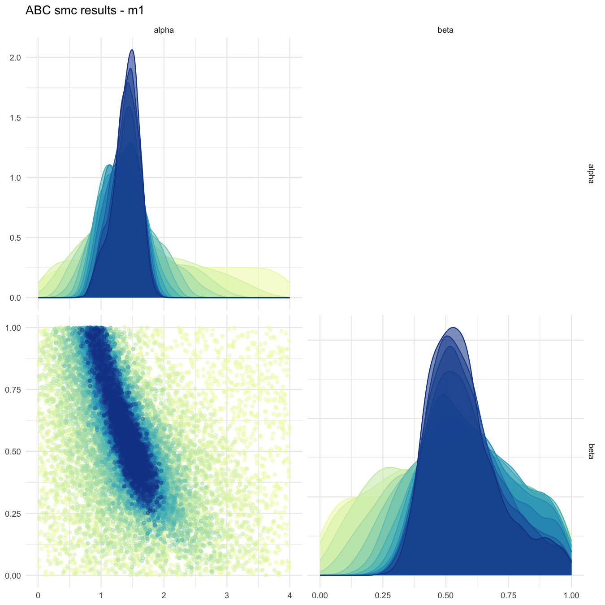
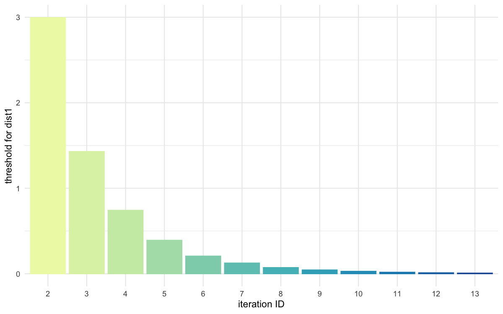
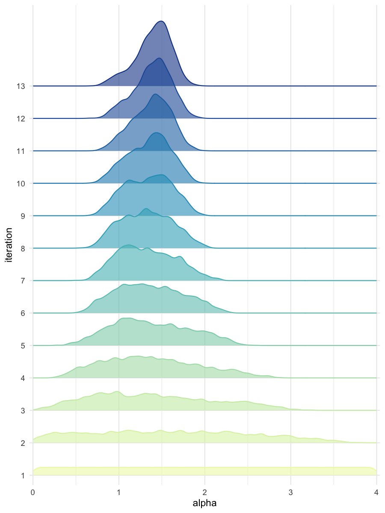
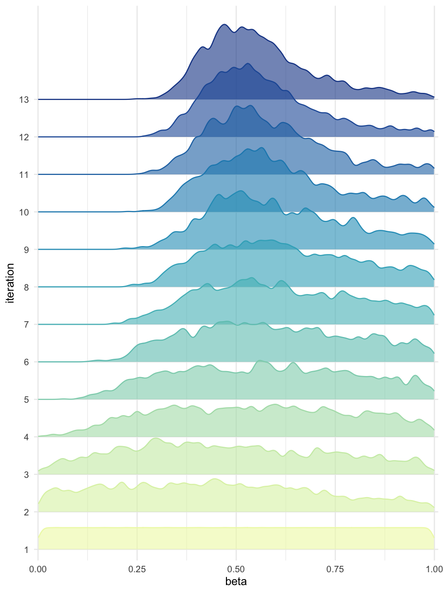

Use of several distances with ABC-SMC
Source:vignettes/use-of-several-distances-with-abc-smc.Rmd
use-of-several-distances-with-abc-smc.RmdCreate a reference trajectory
sum_stat_obs <- c(2.0, 0.75)Run abc smc procedure
res <- abcsmc(model_list = model_list,
prior_dist = prior_dist,
ss_obs = sum_stat_obs,
max_number_of_gen = 15,
nb_acc_prtcl_per_gen = 2000,
new_threshold_quantile = 0.8,
nb_threshold = 2, # the number of thresholds/distances used has to be indicated
experiment_folderpath = "svrldist",
max_concurrent_jobs = 5,
verbose = FALSE)
#> The distance threshold(s) (epsilon(s)) fall(s) below the predetermined min value!
#> [1] 0.008943418 0.004011059Plot results
all_accepted_particles <- res$particles
all_thresholds <- res$thresholds
plot_abcsmc_res(data = all_accepted_particles, prior = prior_dist,
filename = "svrldist/res/figs/svrldist_pairplot_all.png", colorpal = "YlGnBu")
#> [1] "Plot saved as '.png'."
#> Registered S3 method overwritten by 'GGally':
#> method from
#> +.gg ggplot2
plot_densityridges(data = all_accepted_particles, prior = prior_dist,
filename = "svrldist/res/figs/svrldist_densityridges.png", colorpal = "YlGnBu")
#> [1] "Plot saved as '.png'."
plot_thresholds(data = all_thresholds, nb_threshold = 2, # the number of thresholds/distances used has to be indicated
filename = "svrldist/res/figs/svrldist_thresholds.png", colorpal = "YlGnBu")
#> [1] "Plot saved as 'png'."

Pairplot of all iterations

Threshold evolution over iterations (1)

Threshold evolution over iterations (2)

Density estimates for alpha

Density estimates for beta